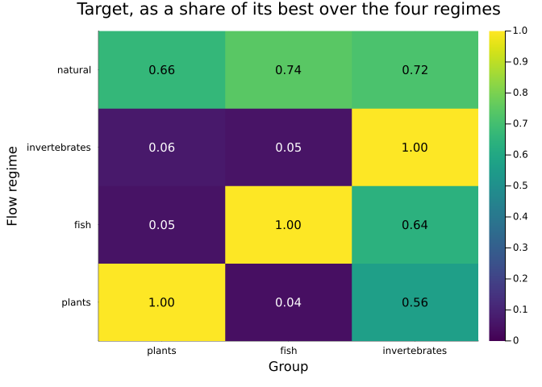
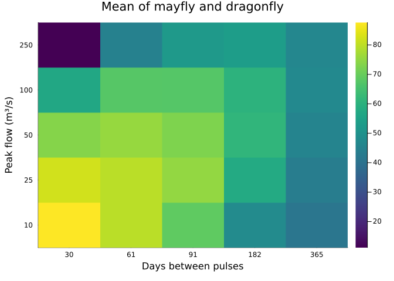

Designing flows for a whole river: plants, fish and invertebrates
Simon Frost
- Three groups, one river
- The invertebrates
- The four flow regimes
- Agreement with the authors’ code
- The trade-offs
- Searching for designed flows
- A carrying capacity carried forward
- What is measured and what is assumed
- References
ENV["GKSwstype"] = "100"
using MatrixCommunityModels
using Printf, Random, Statistics
using PlotsThree groups, one river
Below a dam, river managers can design the flow regime: how often to release floods, how large, and when. Tonkin et al. (2021) asked what flows designed for one group of organisms do to the others. They took three existing models, each driven by flow:
- riparian plants: the five guilds of Lytle et al. (2017), linked by space (vignette 3); the target is cottonwood;
- fish: the seven species of the Verde River of Rogosch et al. (2019), linked by biomass (vignette 2); the target is the three native species;
- aquatic invertebrates: three taxa modelled by McMullen et al. (2017); the target is the two with winged adults that feed birds and bats, a mayfly (Fallceon) and a dragonfly (Progomphus), and not the third, an ostracod.
For each group they designed the regime that maximises its target, and ran all three groups under each designed regime and under the natural regime of the upper Verde River. This vignette adds the invertebrates to the package and repeats the comparison.
The invertebrates are not stage-structured. Each is one population with logistic growth in continuous time, a carrying capacity that a flood resets, and a mortality that a flood causes; the three do not interact. They are written here as nets with a single stage and a time step of a day.
The invertebrates
Between floods a population grows as dN/dt = r N (1 − N/K(t)). A flood of peak flow Q (m³/s) kills all but exp(−h Q) of it and moves the carrying capacity towards Kd by the flood effect Qf(Q) = (Q − 5) / (100 + Q − 5); afterwards the carrying capacity relaxes back towards its baseline Kb at rate g. For the mayfly and dragonfly Kd > Kb: floods open habitat. For the ostracod Kd < Kb. The values are those of the authors’ code:
FLOW_INVERTEBRATES(mayfly = (r = 0.23, h = 0.02, g = 0.01, Kd = 100.0, Kb = 40.0), dragonfly = (r = 0.08, h = 0.01, g = 0.01, Kd = 100.0, Kb = 40.0), ostracod = (r = 0.16, h = 0.05, g = 0.01, Kd = 40.0, Kb = 100.0), Qmin = 5.0, a = 100.0)The authors solve each interval between floods in closed form, with a numerical integral of the carrying capacity. Here flood_invertebrate steps a day at a time. The logistic equation is a Bernoulli equation, so each day has an exact solution, 1/N(t) = exp(−r)/N(t−1) + ∫ r/K(y) exp(−r(t−y)) dy over the day, and stepping day by day gives the same numbers. That day’s value is the response of the net’s one transition, living; on the day of a flood the value is the flood’s survival.
The environment of each day says how many days have passed since the last flood, the flood’s peak flow, and the carrying capacity of each taxon just before that flood (invertebrate_flows). The three taxa share no pool:
bugs = flow_invertebrates()
(species = species_names(bugs), pools = pool_names(bugs))(species = [:mayfly, :dragonfly, :ostracod], pools = Symbol[])The four flow regimes
The designed regimes are those of the paper:
- plants: a spring flood every sixth year, preceded by a drought year;
- fish: a spring flood every year;
- invertebrates: four pulses of 50 m³/s a year, too small to count as a flood for plants or fish, so that every year is a year without events for them;
- natural: the upper Verde River near Paulden, 1964-2008, repeated. For the invertebrates this is a spring peak and an autumn peak each year, the means of the seasonal maxima.
tonkin_scenario gives the environments of each regime for the three groups: 200 years for plants and fish, 30 years of days for the invertebrates. The invertebrate models were parameterised on the Bill Williams River; as in the authors’ code, Verde flows are scaled by 0.35 to that river.
regimes = Dict(s => tonkin_scenario(s) for s in TONKIN_SCENARIOS)
inv = Dict(s => project(bugs, regimes[s].invertebrate_n0, regimes[s].invertebrates) for s in TONKIN_SCENARIOS)
years = (0:365 * 30) ./ 365
plots = [plot(years, [inv[s][x][:, 1] for x in (:mayfly, :dragonfly, :ostracod)]; title = string(s),
label = s === :plants ? ["mayfly" "dragonfly" "ostracod"] : "", ylims = (0, 100),
xlabel = "Year", ylabel = "% of greatest K", lw = 0.8) for s in TONKIN_SCENARIOS]
plot(plots...; layout = (2, 2), size = (850, 600))
Agreement with the authors’ code
The authors’ scripts (GitHub jdtonkin/flow-tradeoffs, MIT) select each regime by commented-out blocks. test/reference/R/run_flow_tradeoffs_reference.R runs each script once per regime, with the regime injected, and writes what it computes. The fish script draws the initial adult biomass of each species at random in each of its 100 iterations, without a seed; the driver sets a seed and writes the draws, which are replayed here.
refdir = joinpath(pkgdir(MatrixCommunityModels), "test", "reference")
csv(f) = [split(l, ",") for l in readlines(joinpath(refdir, f))[2:end]]
code = Dict(:plants => "RIP_OPT", :fish => "FSH_OPT", :invertebrates => "INV_OPT", :natural => "NAT")
taxon = Dict("Mayfly" => :mayfly, "Dragonfly" => :dragonfly, "Ostracod" => :ostracod)
rip = riparian_model()
fish = verde_fish_model()
# space held by a guild's stages above seedlings, as % of K, in cottonwood-seedling units
nonseedling(sol, g) = [100 * 350 * sum(sol[g][k, s] / RIPARIAN_GUILDS[g].den[s] for s in 2:6) / rip.K for k in 1:200]
function fish_means(s)
acc = zeros(200, 7)
starts = [r for r in csv("flow_fish_initial.csv") if r[1] == code[s]]
for r in starts
n0 = [Symbol(sp) => [0.0, 0.0, parse(Float64, r[2 + j])] for (j, sp) in enumerate(VERDE_SPECIES)]
f = project(fish.community, n0, regimes[s].fish[1:199])
for (j, sp) in enumerate(VERDE_SPECIES)
acc[:, j] .+= f[Symbol(sp)][:, 2] .+ f[Symbol(sp)][:, 3]
end
end
return acc ./ length(starts)
end
plants = Dict(s => project(rip.community, regimes[s].riparian_n0, regimes[s].riparian[1:199]) for s in TONKIN_SCENARIOS)
fishes = Dict(s => fish_means(s) for s in TONKIN_SCENARIOS)
for s in TONKIN_SCENARIOS
bug = maximum(maximum(abs(inv[s][taxon[r[1]]][parse(Int, r[3]) + 1, 1] - parse(Float64, r[5]))
for r in csv("flow_inverts.csv") if r[2] == code[s] && r[1] == t) for t in keys(taxon))
R = [r for r in csv("flow_riparian.csv") if r[1] == code[s]]
plant = maximum(maximum(abs.(nonseedling(plants[s], g) .- [parse(Float64, r[2 + j]) for r in R]) ./
max.([parse(Float64, r[2 + j]) for r in R], 1e-3)) for (j, g) in enumerate((:C, :T, :W, :S, :M)))
M = permutedims(reduce(hcat, [parse.(Float64, r[3:9]) for r in csv("flow_fish_mean.csv") if r[1] == code[s]]))
@printf("%-14s invertebrates %.1e (absolute) plants %.1e fish %.1e (relative)\n", s, bug, plant,
maximum(abs.(fishes[s] .- M) ./ max.(M, 1e-6)))
endplants invertebrates 3.9e-12 (absolute) plants 5.5e-16 fish 0.0e+00 (relative)
fish invertebrates 1.1e-12 (absolute) plants 5.1e-16 fish 0.0e+00 (relative)
invertebrates invertebrates 1.8e-13 (absolute) plants 4.9e-16 fish 0.0e+00 (relative)
natural invertebrates 6.0e-13 (absolute) plants 4.7e-16 fish 0.0e+00 (relative)The invertebrates agree to within the error of R’s numerical integration (the reference keeps every thirtieth day), the plants to rounding, and the fish exactly.
The trade-offs
The targets are those of the authors’ code: the space held by cottonwood above the seedling stage, as a percentage of the total, averaged over years 11 to 200; the biomass of the three native fishes above the juvenile stage, as a percentage of the carrying capacity, averaged over the 100 starts and over years 11 to 200; and the mean of the mayfly and the dragonfly over the last 20 of 30 years.
target(s) = (plants = mean(nonseedling(plants[s], :C)[11:200]),
fish = mean(100 .* (fishes[s][11:200, 1] .+ fishes[s][11:200, 2] .+ fishes[s][11:200, 4]) ./ 47660),
invertebrates = mean((inv[s][:mayfly][3652:end, 1] .+ inv[s][:dragonfly][3652:end, 1]) ./ 2))
T = Dict(s => target(s) for s in TONKIN_SCENARIOS)
R = Dict(r[1] => parse.(Float64, r[2:4]) for r in csv("flow_targets.csv"))
println(rpad("regime", 15), rpad("plants", 10), rpad("fish", 10), "invertebrates (R: plants, fish, invertebrates)")
for s in TONKIN_SCENARIOS
t = T[s]
@printf("%-14s %6.2f %6.2f %6.2f (%.2f, %.2f, %.2f)\n", s, t.plants, t.fish, t.invertebrates, R[code[s]]...)
endregime plants fish invertebrates (R: plants, fish, invertebrates)
plants 49.33 2.65 40.87 (49.33, 2.65, 40.87)
fish 2.34 70.94 46.58 (2.34, 70.94, 46.58)
invertebrates 3.19 3.51 72.87 (3.19, 3.51, 72.87)
natural 32.76 52.77 52.21 (32.76, 52.77, 52.21)Each designed regime does best for its own group, and each costs another group dearly. Tonkin et al. report the natural regime’s targets as fractions of the designed regime’s, and the losses of the groups that are not targeted as fractions of their value under the natural regime:
nat = T[:natural]
ratios = [("plants: natural / plant regime", nat.plants / T[:plants].plants, 66),
("fish: natural / fish regime", nat.fish / T[:fish].fish, 77),
("invertebrates: natural / invertebrate regime", nat.invertebrates / T[:invertebrates].invertebrates, 72),
("cottonwood under the fish regime / natural", T[:fish].plants / nat.plants, 7),
("native fish under the plant regime / natural", T[:plants].fish / nat.fish, 5),
("cottonwood under the invertebrate regime / natural", T[:invertebrates].plants / nat.plants, 10),
("native fish under the invertebrate regime / natural", T[:invertebrates].fish / nat.fish, 6)]
for (what, x, published) in ratios
@printf("%-52s %5.1f%% (published %d%%)\n", what, 100x, published)
endplants: natural / plant regime 66.4% (published 66%)
fish: natural / fish regime 74.4% (published 77%)
invertebrates: natural / invertebrate regime 71.6% (published 72%)
cottonwood under the fish regime / natural 7.2% (published 7%)
native fish under the plant regime / natural 5.0% (published 5%)
cottonwood under the invertebrate regime / natural 9.7% (published 10%)
native fish under the invertebrate regime / natural 6.6% (published 6%)The ratios agree with the paper except for fish under the natural regime, 74% against 77%. Fish results depend on the random starting biomass, which the authors’ code draws without a seed; the paper’s runs used other draws.
groups = [:plants, :fish, :invertebrates]
share = [getproperty(T[s], g) / maximum(getproperty(T[x], g) for x in TONKIN_SCENARIOS) for s in TONKIN_SCENARIOS, g in groups]
heatmap(string.(groups), collect(string.(TONKIN_SCENARIOS)), share; c = :viridis, clims = (0, 1),
xlabel = "Group", ylabel = "Flow regime", title = "Target, as a share of its best over the four regimes")
annotate!([(j - 0.5, i - 0.5, text(@sprintf("%.2f", share[i, j]), 10, share[i, j] > 0.5 ? :black : :white))
for i in 1:4, j in 1:3][:])
Searching for designed flows
Tonkin et al. searched flow regimes for each group by changing the frequency of events. For the invertebrates their code projects ten years of floods every 91, 121, 182, 365 or 730 days (365/4, 365/3, 365/2, 365 and 730, cut to whole days), with floods of 1000 m³/s for the mayfly and dragonfly and 30 m³/s for the ostracod, and compares the arithmetic and geometric mean abundance after the first year:
gm(x) = exp(sum(log.(x[x .> 0])) / length(x))
found = csv("flow_findopt.csv")
for (name, x, Q) in (("Dragonfly", :dragonfly, 1000), ("Mayfly", :mayfly, 1000), ("Ostracod", :ostracod, 30))
for (k, every) in enumerate((365 / 4, 365 / 3, 365 / 2, 365, 730))
envs = invertebrate_flows(pulses(every, Q, 3650)...)
n = project(flood_invertebrate(x), [50.0], envs)[x][367:end, 1]
r = only(r for r in found if r[1] == name && r[2] == "freq$k")
@printf("%-9s every %3d days: mean %6.2f (R %6.2f), geometric mean %9.3g (R %9.3g)\n",
name, floor(Int, every), mean(n), parse(Float64, r[3]), gm(n), parse(Float64, r[4]))
end
endDragonfly every 91 days: mean 0.00 (R 0.00), geometric mean 4.73e-28 (R 4.73e-28)
Dragonfly every 121 days: mean 0.05 (R 0.05), geometric mean 0.000162 (R 0.000162)
Dragonfly every 182 days: mean 16.50 (R 16.50), geometric mean 1.42 (R 1.42)
Dragonfly every 365 days: mean 30.16 (R 30.16), geometric mean 7.54 (R 7.54)
Dragonfly every 730 days: mean 35.82 (R 35.82), geometric mean 19 (R 19)
Mayfly every 91 days: mean 2.37 (R 2.37), geometric mean 0.00198 (R 0.00198)
Mayfly every 121 days: mean 16.88 (R 16.88), geometric mean 0.0369 (R 0.0369)
Mayfly every 182 days: mean 28.86 (R 28.86), geometric mean 0.391 (R 0.391)
Mayfly every 365 days: mean 36.25 (R 36.25), geometric mean 4.06 (R 4.06)
Mayfly every 730 days: mean 38.51 (R 38.51), geometric mean 14.5 (R 14.5)
Ostracod every 91 days: mean 61.82 (R 61.82), geometric mean 58.8 (R 58.8)
Ostracod every 121 days: mean 71.46 (R 71.46), geometric mean 68.6 (R 68.6)
Ostracod every 182 days: mean 83.99 (R 83.99), geometric mean 81.8 (R 81.8)
Ostracod every 365 days: mean 94.13 (R 94.13), geometric mean 92.9 (R 92.9)
Ostracod every 730 days: mean 97.47 (R 97.47), geometric mean 96.9 (R 96.9)Large floods every 91 days nearly wipe out the targets, and rarer floods suit them better. The prescription the authors chose instead, four pulses a year, is of 50 m³/s. The search can be widened to magnitude and frequency together, for the mean of the two targets over the last 20 of 30 years:
everys = [30, 61, 91, 182, 365]
sizes = [10, 25, 50, 100, 250]
grid = [begin
envs = invertebrate_flows(pulses(e, q, 365 * 30)...)
sol = project(bugs, [50.0, 50, 50], envs)
mean((sol[:mayfly][3652:end, 1] .+ sol[:dragonfly][3652:end, 1]) ./ 2)
end for q in sizes, e in everys]
heatmap(string.(everys), string.(sizes), grid; xlabel = "Days between pulses", ylabel = "Peak flow (m³/s)",
title = "Mean of mayfly and dragonfly", c = :viridis)
best = argmax(grid)
(best_every = everys[best[2]], best_peak = sizes[best[1]], value = round(grid[best]; digits = 1),
prescription = round(T[:invertebrates].invertebrates; digits = 1))(best_every = 30, best_peak = 10, value = 87.6, prescription = 72.9)On this grid the targets keep improving towards smaller and more frequent pulses, and the best value lies at its edge, above that of the prescription. The authors’ code explores frequency at one magnitude per taxon; how the prescription’s 50 m³/s was chosen is not in the code or in the preprint’s main text.
For the plants and fish the authors’ code lists trial regimes (spring floods in a quarter, a third or half of years, floods every tenth year, droughts), from which the prescriptions were chosen. As an illustration, a spring flood every k years, with a drought in the year before it for plants, gives:
function every_k(k; drought_before = true)
flood = [mod(y, k) == 0 ? 1 : 0 for y in 1:200]
drought = [drought_before && k > 1 && mod(y + 1, k) == 0 ? 1 : 0 for y in 1:200]
plant_envs = [(year = y, flood = Float64(flood[y]), drought = Float64(drought[y]),
nonflood = flood[y] + drought[y] == 1 ? 0.0 : 1.0, cprop = 0.9, tprop = 0.4, decline = 1.0, tdecline = 1.0)
for y in 1:199]
fish_envs = [(SP_highflood = flood[y], SU_highflood = 0, medflood = 0, drought = drought[y],
nonevent = 1 - flood[y] - drought[y]) for y in 1:199]
c = mean(nonseedling(project(rip.community, regimes[:plants].riparian_n0, plant_envs), :C)[11:200])
rng = Xoshiro(k)
natives = mean(begin
f = project(fish.community, tonkin_fish_start(rng), fish_envs)
mean(100 .* sum(f[sp][11:200, 2] .+ f[sp][11:200, 3] for sp in (:CACL, :GIRO, :CAIN)) ./ 47660)
end for _ in 1:20)
return (k = k, cottonwood = round(c; digits = 1), native_fish = round(natives; digits = 1))
end
[every_k(k) for k in (1, 2, 3, 4, 6, 8, 10)]7-element Vector{@NamedTuple{k::Int64, cottonwood::Float64, native_fish::Float64}}:
(k = 1, cottonwood = 2.3, native_fish = 71.2)
(k = 2, cottonwood = 47.1, native_fish = 0.6)
(k = 3, cottonwood = 50.7, native_fish = 1.8)
(k = 4, cottonwood = 47.5, native_fish = 2.0)
(k = 6, cottonwood = 49.3, native_fish = 2.4)
(k = 8, cottonwood = 48.1, native_fish = 3.0)
(k = 10, cottonwood = 47.1, native_fish = 2.9)Here the fish start from 20 draws of the authors’ random initial biomass, made with tonkin_fish_start. Native fish need floods often and suffer from droughts, so they do best with a flood every year (k = 1, which has no drought) and collapse otherwise. Cottonwood fails with a flood every year, when willow takes over, and holds about half of the space with floods every two to ten years and a drought before each; on cottonwood alone a flood every third year does slightly better than every sixth. The authors’ comment on their choice of six years is that it “keeps cot high, tam low, and eradicates DS”, so it weighed tamarisk and sagebrush (DS) too.
A carrying capacity carried forward
The authors’ invertebrate code carries the carrying capacity from one flood to the next as Kpre + (K0 − Kpre) exp(−g t), which relaxes towards the value before the flood rather than towards the baseline, while within the interval the population grows under a carrying capacity that relaxes towards the baseline (a comment notes that the code “works from kpre rather than kb”). Under frequent floods the carried value climbs towards Kd, so each flood starts from a higher carrying capacity than the population last saw. tonkin_scenario(...; corrected = true) carries forward the carrying capacity the population grew under:
for s in TONKIN_SCENARIOS
c = tonkin_scenario(s; corrected = true)
sol = project(bugs, c.invertebrate_n0, c.invertebrates)
@printf("%-14s target %5.1f as coded, %5.1f corrected\n", s, T[s].invertebrates,
mean((sol[:mayfly][3652:end, 1] .+ sol[:dragonfly][3652:end, 1]) ./ 2))
endplants target 40.9 as coded, 40.9 corrected
fish target 46.6 as coded, 45.6 corrected
invertebrates target 72.9 as coded, 52.8 corrected
natural target 52.2 as coded, 47.3 correctedThe choice matters most for the invertebrate prescription, whose frequent pulses ratchet the carried carrying capacity up: corrected, its target falls from 72.9 to 52.8. It is still the best of the four regimes for the invertebrates, but by a much smaller margin (the natural regime gives 47.3 when corrected). This is a question for the authors.
What is measured and what is assumed
| Quantity | Value | Source |
|---|---|---|
| Riparian guilds: vital rates, K | as in vignette 3 | Lytle et al. 2017 |
| Riparian: seed release overlap for cottonwood and tamarisk | 0.9 and 0.4, every year; no drawdown decline | the authors’ code (simplified from Lytle et al. 2017) |
| Riparian: starting area | 3978 m² for every stage of every guild | the authors’ code |
| Fish: vital rates, year-type mortalities, K | as in vignette 2 | Rogosch et al. 2019 |
| Fish: starting adult biomass | negative binomial draws, 100 per regime | the authors’ code |
| Invertebrates: r, h, g, Kd, Kb; Qmin, a | FLOW_INVERTEBRATES | the authors’ code, after McMullen et al. 2017 |
| Verde to Bill Williams River flows | × 0.35 | the authors’ code |
| Natural regime | Verde at Paulden 1964-2008 (year types); mean spring and autumn peaks 1134 and 459 cfs (invertebrates) | the authors’ code and data |
| Designed regimes | as listed above | Tonkin et al. 2021 and the authors’ code |
What differs between sources, or from what was expected:
- The brief for this vignette described the invertebrates as stage-structured; the models of McMullen et al. as coded by Tonkin et al. are unstructured logistic populations, and are written here as one-stage nets.
- The carrying capacity carried from flood to flood relaxes towards its value before the flood, not the baseline; kept as coded, with a corrected variant, which lowers the invertebrate target of the invertebrate prescription from 72.9 to 52.8.
- The riparian model of this comparison holds seed-release overlap fixed and has no drawdown decline, unlike the model of Lytle et al. (2017) in vignette 3; the same community is used, with these terms set in the environment.
- Sagebrush and meadow keep the behaviours of the original riparian script described in vignette 3 (the meadow takes the willow’s recruitment).
- Native fish under the natural regime are at 74% of the fish prescription here and 77% in the paper, presumably because the random starting biomass differs.
- A wider search finds better invertebrate flows than the prescription (smaller, more frequent pulses), and on cottonwood alone floods every third year do slightly better than every sixth.
The paper was read in full as its bioRxiv preprint (version of 20 June 2020, CC BY-NC-ND), not as published, and its WebPanel 1 (detailed methods) was not read. McMullen et al. (2017) could not be accessed (the publisher refused access); the invertebrate models and parameters are taken from the authors’ code alone. The code of jdtonkin/flow-tradeoffs was read in full for the scripts used.
References
Lytle, D. A., Merritt, D. M., Tonkin, J. D., Olden, J. D. & Reynolds, L. V. (2017). Linking river flow regimes to riparian plant guilds: a community-wide modeling approach. Ecological Applications 27, 1338-1350.
McMullen, L. E., De Leenheer, P., Tonkin, J. D. & Lytle, D. A. (2017). High mortality and enhanced recovery: modelling the countervailing effects of disturbance on population dynamics. Ecology Letters 20, 1566-1575. https://doi.org/10.1111/ele.12866
Rogosch, J. S., Tonkin, J. D., Lytle, D. A., Merritt, D. M., Reynolds, L. V. & Olden, J. D. (2019). Increasing drought favors nonnative fishes in a dryland river: evidence from a multispecies demographic model. Ecosphere 10, e02681.
Tonkin, J. D., Olden, J. D., Merritt, D. M., Reynolds, L. V., Rogosch, J. S. & Lytle, D. A. (2021). Designing flow regimes to support entire river ecosystems. Frontiers in Ecology and the Environment 19, 326-333. https://doi.org/10.1002/fee.2348. Code and data: https://github.com/jdtonkin/flow-tradeoffs (MIT).